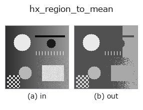

halcon_ext op• Datenarten: image → image
• Aufruf: fullseye.apply(img, "hx_region_to_mean", a=0.5, b=0.5) (das 2-D-Modell ist ein Bild plus zwei skalare Regler a,b∈[0,1])
• HALCON-Äquivalent: region_to_mean (Bedeutung und Parameter sind in der HALCON-Referenz nachzulesen)

*Die Abbildung ist die tatsächliche Ausgabe auf einer synthetischen 128×128-Eingabe. Links Eingabe, rechts Ausgabe. Punktwolken als Draufsicht-Streudiagramm (Helligkeit = z), 1-D-Reihen als Linie, Volumen als Maximum-Projektion entlang z, Videos als mittleres Bild, komplexe Bilder als Betrag; Rückgabewerte, die kein Bild ergeben, werden als Werte gezeigt.*
Regler a durchfahren (0,1 / 0,5 / 0,9, der andere Regler auf Standard):
▸ hx_region_to_mean: knob a sweep (docs site)
*Regler b ändert die Ausgabe nicht (gemessen: identisch bei 0,1 / 0,5 / 0,9).*
Auf anderen Bildern (synthetische Szene / Foto / Münzen. Obere Reihe: Eingaben, untere Reihe: deren Ausgaben. Regler auf Standard):
▸ hx_region_to_mean: other inputs (docs site)
*Keine Farb-Eingabe (H,W,3) gezeigt: dieser Op behandelt den Farbkanal als dritte Raumachse (vermischt Kanäle). Pro Kanal aufrufen.*
Färbt jede zusammenhängende Region mit ihrem mittleren Grauwert (Bild -> Bild). Vorder-/Hintergrund bei Schwelle a getrennt, dann gelabelt.
> Die ausführliche Beschreibung unten ist der Originaltext — Zusammenfassung und Überschriften sind übersetzt.
`v > a を前景とし ndimage.label(4 近傍)で連結成分に分け、各成分の画素を ndimage.mean` で求めた
成分内の平均 gray 値で塗りつぶす。背景(`v <= a`)は背景画素全体の平均 1 値で塗る(背景が無ければ 0.0)。
出力は入力と同形の float 画像で、値域は入力の範囲内(正規化しない)。
• `a` → 前景/背景を分けるしきい値。a=0 なら 0 より大きい画素がすべて前景。
• `b` は未使用。
結果は成分ごとに一定値になるので、後段の `threshold` で「平均が明るい部品だけ」を選ぶような使い方ができる。
4 近傍ラベルなので斜め接触する塊は別々の平均になる。入力の検証は無い。
• Leitfaden zur Familie gallery2d_halcon_ext
• Katalog der Beispieldaten (Download-URLs / Lizenzen) — 2-D nutzt skimage.data (BSD/Public Domain) plus synthetische Bilder, 3-D nennt Download-URLs echter Datenquellen (Stanford, PDS, …).
• Herkunft und Literatur der Operatoren — die Quellen der Forschung/Verfahren, auf denen diese Operatorfamilie beruht.
• Der kanonische Algorithmus (Autor, Jahr) und seine Anwendungen stehen im Familienleitfaden oben.
Das Programm unten ist nachweislich lauffähig (gleiche Eingabe wie die Abbildung). In der Studio-Hilfe wird dieser Block zu Schaltflächen, die es sofort laden und ausführen.
hx_region_to_mean 0.50 0.50
▸ Load this pipeline · Load & run
• gallery2d_halcon_ext — py -3.11 examples/gallery2d_halcon_ext.py
image als Eingabe)identity · gaussian · mean_box · bilateral · unsharp · median · min_filter · max_filter
halcon_ext)hx_gen_circle · hx_gen_ellipse · hx_gen_rectangle2 · hx_gen_checker_region · hx_gen_grid_region · hx_gabor · hx_fit_surface1 · hx_fit_surface2
*Provenance: ops.py — 2D Operator-Registry. Diese Notiz wird von tools/opdocs.py md erzeugt (nicht von Hand bearbeiten).*
© 2026 Kazufumi Furuse — Fullseye operator documentation. Licensed under Apache-2.0.
{kind=link}
{kind=link}